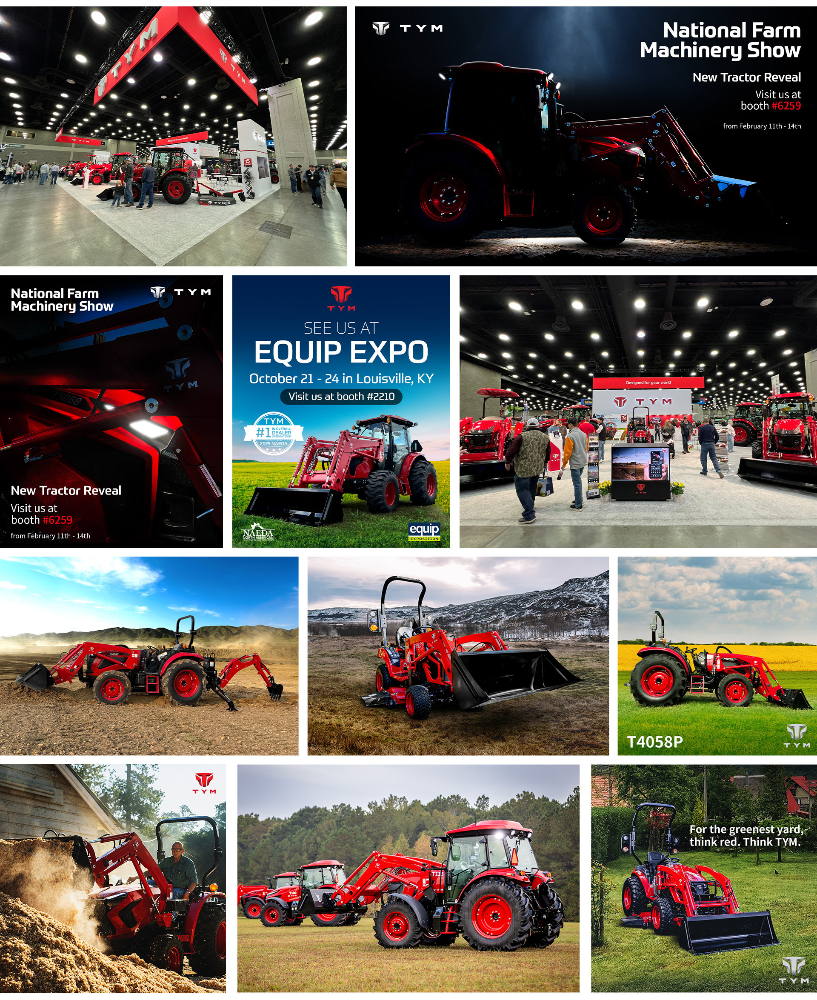
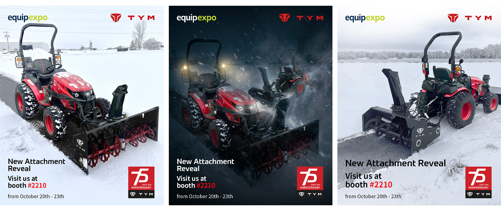

A trade show floor is loud, crowded, and over in a few days. In that time, a brand has seconds to make someone stop walking.
For TYM, events like Equip Expo and the National Farm Machinery Show are where farmers, dealers, and industry leaders see the machines up close and decide who they trust. A booth had to do more than display tractors. It had to pull people in from across the hall and make them feel what the brand stands for. So I set out to design an experience that was as bold and dependable as TYM itself.
I was involved in every design aspect of TYM’s major event presence. I prepared all the assets needed for each show, from graphics and signage to the visuals that filled the space. Working with external partners, I developed the booth layout, shaping how visitors would enter, move through, and engage with the tractors on display. By carrying the “Think Red” identity through every panel, screen, and corner of the booth, I made sure TYM stood out on the floor, long before anyone reached the front.


